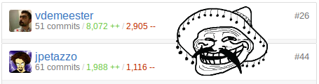
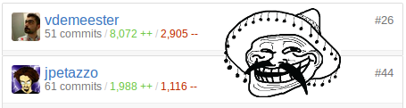
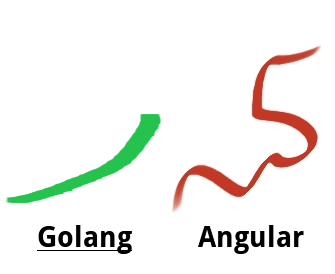
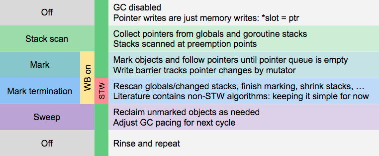

certified trainer
🐳

- I'm a developer, devops, craftsman — I 💓 & work @Zenika
- I 💓 GNU/Linux, Docker & GNU/Emacs
- I 💓 Free-software !
- I 💓 Java, Go, Python and much more
- And I 💓 unicode, 🚴 & 🚶

Présentation rapide
\o/
package main
import "fmt"
func swap(x, y string) (string, string) {
for _, elt := range []string{"a", "b"} {
fmt.Println(elt)
}
return y, x
}
func main() {
a, b := swap("hello", "world")
fmt.Println(a, b)
}
type Vertex struct {
X int
Y int
}
func (v Vertex) PrintCoords() {
fmt.Printf("(%s,%s)", v.X, v.Y)
}
func main() {
v := Vertex{1, 2}
v.PrintCoords()
v.X = 4
fmt.Println(v.X)
}
func adder() func(int) int {
sum := 0
return func(x int) int {
sum += x
return sum
}
}
func main() {
pos, neg := adder(), adder()
for i := 0; i < 10; i++ {
fmt.Println(pos(i), neg(-2*i))
}
}
type Abser interface {
Abs() float64
}
type MyFloat float64
func (f MyFloat) Abs() float64 {
if f < 0 {
return float64(-f)
}
return float64(f)
}
var f Abser
// […]
f.Abs()
｡◕‿◕｡
« The good »

src, _ := os.Open(srcName) defer src.Close() // Doing my stuff […] return "something"
defer execution order : Last in, First out (LIFO)
func b() {
for i := 0; i < 4; i++ {
defer fmt.Print(i)
}
}
// Print 4 3 2 1 0
We feel it's critical to eliminate that programmer overhead, and advances in garbage collection technology in the last few years give us confidence that we can implement it with low enough overhead and no significant latency.

Variables, constants, methods, structure ont 2 états :
func myMethod() string {
return "On me voit pas... 😖"
}
var MyVar = "On me voit 😆"
Pas de notion de privé (visible uniquement sur le fichier)
A goroutine is a lightweight thread managed by the Go runtime.
func f(from string) {
fmt.Println(from, ":", i)
}
func main() {
go f("goroutine")
f("direct")
go func(msg string) {
fmt.Println(msg)
}("going")
}
Channels are a typed conduit through which you can send and receive values with the channel operator,
<-.
waitForMe := make(chan bool)
go func() {
fmt.Println("I'm here ! 😙")
waitForMe <- true
}()
fmt.Println("I'm waiting for you… 😒")
<- waitForMe
fmt.Println("Finally 🙌")
select ⌥
done := make(chan error)
cmd := os.exec("super-long-command", "that", "might", "timeout")
go func() {
// And wait for it to exit in the goroutine :)
exitErr := cmd.Wait()
done <- exitErr
}()
select {
case <-time.After(duration):
cmd.Process.Kill()
break
case err = <-done:
break
}
built-in 💖
func TestTimeConsuming(t *testing.T) {
if testing.Short() {
t.Skip("skipping test in short mode.")
}
// […]
t.Fatalf("hello %s", "world")
}
$ go test PASS ok _/home/vincent/src/docker/docker/pkg/stringutils 0.006s $ go test -cover PASS coverage: 96.5% of statements ok _/home/vincent/src/docker/docker/pkg/stringutils 0.006s
built-in 💕
Benchmark tests built-in également
func BenchmarkHello(b *testing.B) {
for i := 0; i < b.N; i++ {
fmt.Sprintf("hello")
}
}
$ go test -bench=. PASS BenchmarkHello 10000000 282 ns/op ok github.com/vdemeester/dumb 3.084s
godoc : "extracts and generates documentation for Go programs"
vet : "examines Go source code and reports suspicious constructs"
oracle : "source analysis tool that answers questions about Go programs"
golint : "prints out style mistakes, is concerned with coding style"
gofmt : "reformats Go source code"
generate : "scanning for special comments in Go source code that identify general commands to run"
gorename : "performs precise type-safe renaming of identifiers"
-race & racy : "race detector"
godef, gocode, impl, …
env GOOS=linux GOARCH=arm go build -v github.com/constabulary/gb/cmd/gb
// +build !windows
import (
// build-in
"string"
"testing"
// fully-qualified
"github.com/foo/bar"
biz "mysuperdomain.io/foo/baz"
)
¯\_(ツ)_/¯
« The bad »
Golang ne dispose pas de generics.
public class MyGenericObject<T extends Serializable> {
// […]
}
new MyGenericObject<String>();
new MyGenericObject<ASeriailzableObject>();
generate peut permettre de mimics les generics
built-in
gdb le vénérable
delve le nouveau (github)
Go solves the exception problem by not having exceptions.
error indicates to the caller that this method could go wrong
// a whole lot of "err" in returns (to handle or ignore in the caller) func Open(name string) (file *File, err error)
panic always fatal to your program […] you never assume that your
caller can solve the problem ; recover regains control of a
panicking goroutine.
panic("inconceivable")
// Doesn't pass golint
type aDns struct{
Id int
}
// Passes golint
type aDNS struct{
ID int `json:"Id"`
}
// IDoWhatMyNameSays does what's his name says …
func IDoWhatMyNameSays(input string) string {
// […]
}
ヾ(×× ) ﾂ
« The ugly »
variable shadowing on return parameters is sooo easy to get wrong.
func pullImageIfNotExist(image string) (err error) {
if err := imageExists(image); err != nil {
pullCmd := exec.Command(dockerBinary, "pull", image)
_, exitCode, err := runCommandWithOutput(pullCmd)
if err != nil || exitCode != 0 {
err = fmt.Errorf("image %q wasn't found locally and it couldn't be pulled: %s", image, err)
}
}
return
}
built-in pour dire « hey, ce truc est immutable »
func main() {
a := []string{"a", "b", "c", "d"}
b := a[:3] // ["b", "c", "d"]
c := append(b, "lol")
d := append(b, "woot")
fmt.Println(c) // [a b c woot]
fmt.Println(d) // [a b c woot]
}
Laisse pas traîner ton fils… Si tu veux pas qu'il glisse…
go get is cool but…
$ go get -u github.com/docker/libkv # git commit : 2cae37b # […] Few days later $ go get -u github.com/docker/libkv # git commit : 253a9ef $ go build ./... # oh noooeees it's broken 😱
"I want to have reproducible builds on different computers at different times. This is currently problematic; let's make things better."
– David Hinkes, Go+
"If you're using an externally supplied package and worry that it might change in unexpected ways, the simplest solution is to copy it to your local repository. (This is the approach Google takes internally.) […]"
– Go FAQ
godep (Don't use it without vendoring.. it's hell on earth)
glide, gb, name yours, shell scripts, …
export GO15VENDOREXPERIMENT=1
$ ls vendor/src github.com/ golang.org/
Thank You 🐸